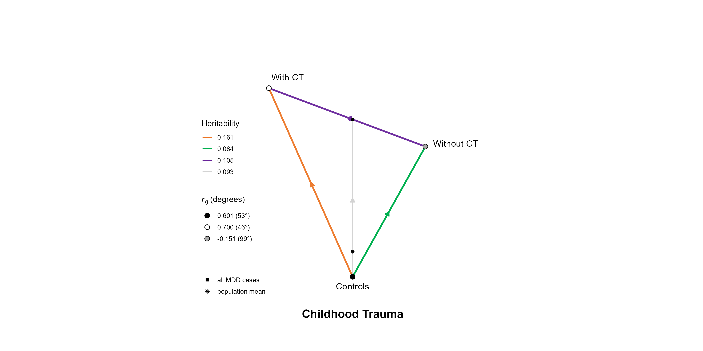
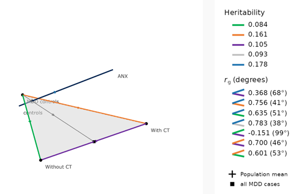
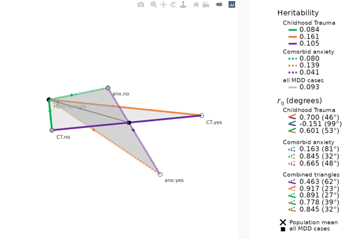
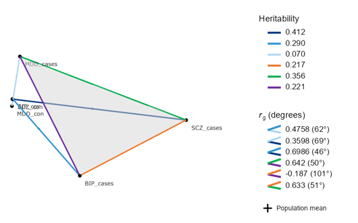

Welcome to this GDVIS tutorial
GDVIS (Genetic Distance Visualization) is an R package that allows you to compute and visualize genetic distances between subtypes of a disorder (2D mode), between a subtype and an external trait (3D mode), between two different subtype definitions (2D_2D mode) and between three different traits (CD mode). Note that all heritabilities need to be on the 50:50 case-control scale. This can be achieved by using the Neffective in LDSC (for more details, see the paper).
Check out the preprint here: https://doi.org/10.1101/2025.11.18.25340484
Check out the GDVIS website here: https://gdvis.shinyapps.io/gdvis/
GDVIS for one subtype
This GDVIS mode is for computing and visualizing a single subtype of a disorder. We will use the example of major depressive disorder (MDD) with childhood trauma (CT) from the paper. There will be a group of controls and a group of MDD cases. The MDD cases are are divided into individuals with childhood trauma (subtype1-cases) and invididuals without childhood trauma (subtype2-cases). Note that it is important that the subtypes together form the full set of cases (e.g., when comparing a subtype that consists of three different groups, such as low impairment, medium impairment and high impairment, the union of any of two of the groups will not be the same as the set of MDD cases).
GDVIS needs the following minimal input, which needs to be in list format:
-
h2_sub1.con: the heritability of the GWAS of the subtype1-cases (here MDD with childhood trauma) versus controls.
-
h2_se_sub1.con: the standard error of the heritability
-
name_sub1: the name of subtype1-cases
-
N_sub1: the number of individuals in the subtype1-cases group
-
h2_sub2.con: the heritability of the GWAS of the subtype2-cases (here MDD without childhood trauma) versus controls.
-
h2_se_sub2.con: the standard error of the heritability
-
name_sub2: the name of subtype2-cases
-
N_sub1: the number of individuals in the subtype2-cases group
-
name_allcases: the name of the pool of the subtype1-cases and subtype2-cases group
-
name_con: the name of the controls
-
rg_sub1.con_sub2.con: the genetic correlation between the GWAS subtype1-cases versus controls and the GWAS subtype2-cases versus controls
- rg_se_sub1.con_sub2.con: the standard error of the genetic correlation
-
filename: the name of the file for saving
- pop.prev_case: the population prevalence of the cases (here the population prevalence of MDD)
There are optional variables that you can also add, this will allow GDVIS to check its calculated values against LDSC values, the result of which can be found in the logfile. However, this is not necessary and you can create the input list without these variables.
-
optional_LDSC_rg_allcases.con_sub1.con: the genetic correlation between the GWAS all cases (the pool of subtype1-cases and subtype2-cases) versus controls and the GWAS subtype1-cases versus controls
-
optional_LDSC_rg_se_allcases.con_sub1.con: the standard error of the genetic correlation
-
optional_LDSC_rg_allcases.con_sub2.con: the genetic correlation between the GWAS all cases (the pool of subtype1-cases and subtype2-cases) versus controls and the GWAS subtype2-cases versus controls
-
optional_LDSC_rg_se_allcases.con_sub2.con: the standard error of the genetic correlation
-
optional_LDSC_h2_sub1.sub2: the heritability of the GWAS of subtype1-cases versus subtype2-cases
-
optional_LDSC_h2_se_sub1.sub2: the standard error of the heritability
-
optional_LDSC_rg_sub1.con_sub1.sub2: the genetic correlation of the GWAS subtype1-cases versus controls and the GWAS subtype1-cases versus subtype2-cases
-
optional_LDSC_rg_se_sub1.con_sub1.sub2: the standard error of the genetic correlation
-
optional_LDSC_rg_sub2.con_sub1.sub2: the genetic correlation of the GWAS subtype2-cases versus controls and the GWAS subtype1-cases versus subtype2-cases
-
optional_LDSC_rg_se_sub2.con_sub1.sub2: the standard error of the genetic correlation
-
optional_LDSC_h2_allcases.con: the heritability of the GWAS of a;; cases (the pool of subtype1-cases and subtype2-cases) versus controls
- optional_LDSC_h2_se_allcases.con: the standard error of the heritability
- folder_location: if you want to save the output in a different folder than the current working directory
GDVIS will not run when there is no suggested evidence of significant difference between subgroups.
Specifically, when rg is not significantly different from 1 (filter 1a) AND h2.sub1 is not clearly different from h2.sub2 (filter 1b and 1c), the triangle will not be plotted.
In some occasions, a triangle will not be plotted while it would have been plotted with larger GWAS sample sizes (and therefore smaller standard errors). GDVIS will also not run when one of the heritabilities is not significant.
Create the input list
input.list <- list(
h2_sub1.con = 0.1606,
h2_se_sub1.con = 0.0139,
name_sub1 = "With CT",
N_sub1 = 14146,
h2_sub2.con = 0.0839,
h2_se_sub2.con = 0.0098,
name_sub2 = "Without CT",
N_sub2 = 16285,
name_allcases = "all MDD cases",
name_con = "controls",
rg_sub1.con_sub2.con = 0.6011,
rg_se_sub1.con_sub2.con = 0.0610,
plot_title = "Childhood Trauma",
filename = "Childhood Trauma",
pop.prev_case = 0.16,
# All variables below can optionally be added to the input.list
optional_LDSC_rg_allcases.con_sub1.con = 0.9111,
optional_LDSC_rg_se_allcases.con_sub1.con = 0.0167,
optional_LDSC_rg_allcases.con_sub2.con = 0.8765,
optional_LDSC_rg_se_allcases.con_sub2.con = 0.0198,
optional_LDSC_h2_sub1.sub2 = 0.1036,
optional_LDSC_h2_se_sub1.sub2 = 0.0162,
optional_LDSC_rg_sub1.con_sub1.sub2 = 0.6995,
optional_LDSC_rg_se_sub1.con_sub1.sub2 = 0.0389,
optional_LDSC_rg_sub2.con_sub1.sub2 = -0.1544,
optional_LDSC_rg_se_sub2.con_sub1.sub2 = 0.0983,
optional_LDSC_h2_allcases.con = 0.0915,
optional_LDSC_h2_se_allcases.con = 0.0079)Pass input list to GDVIS_calc
A logfile will also automatically be generated and saved, which you can find in the folder GDVIS_tutorial_output on the github.
output <- GDVIS_calc(input.list)GDVIS_calc returns the path to an RData object, which we have put in the variable output (note that the RData object is also saved).
GDVIS_plot_2D takes as input the output generated from GDVIS_calc.
Note that the h2 and rg values in the legend are the GDVIS estimated values and not the optional LDSC values. Note that you can manually set the axes limits (this is especially nice if you have multiple triangles and want to make sure the axes are similar, it can also help with making the legend appear outside of the triangle).
Plot the subtype
# GDVIS_plot(output) This will run as well, but we will add some axes restaints
GDVIS_plot(output, x_lower = -0.35, x_upper = 0.35, y_lower = -0.15, y_upper = 0.35)
GDVIS for one subtype with an external trait
GDVIS can also plot an external trait on the subtype visualization, making a 3D plot.
In this example we will add the external trait Anxiety.
GDVIS will not run when the input would result in an invalid geometrical representation (see paper for more details).
GDVIS needs the following extra input:
-
plot_3D: this tells GDVIS that you want to calculate a subtype with an external trait and should be set to TRUE
-
h2_ext: the heritabitlity of the external trait (on the 50/50 case_control ascertainment scale)
- h2_se_ext: the standard error of the heritabilty
-
rg_sub1.con_ext: the genetic correlation of the GWAS subtype1-cases versus controls and the GWAS of the external trait
- rg_se_sub1.con_ext: the standard error of the genetic correlation
-
rg_sub2.con_ext: the genetic correlation of the GWAS subtype2-cases versus controls and the GWAS of the external trait
- rg_se_sub2.con_ext: the standard error of the genetic correlation
-
name_ext: the name of the external trait
- pop.prev_ext: the population prevalence of the external trait, if the trait is continuous, set the prevalence to 0.5
There is some optional input here as well, will allow GDVIS to check its calculated values against LDSC values:
- optional_LDSC_rg_sub1.sub2_ext: the genetic correlation of the GWAS subtype1-cases versus subtype2-cases and the GWAS of the external trait
- optional_LDSC_rg_se_sub1.sub2_ext: the standard error of the genetic correlation
- optional_LDSC_rg_allcases.con_ext: the genetic correlation of the GWAS all cases (the union of subtype1-cases and subtype2-cases) and the GWAS of the external trait
- optional_LDSC_rg_se_allcases.con_ext: the standard error of the genetic correlation
Create the input list
input.list.3D <- list(
# 2D required input
h2_sub1.con = 0.1606,
h2_se_sub1.con = 0.0139,
name_sub1 = "With CT",
N_sub1 = 14146,
h2_sub2.con = 0.0839,
h2_se_sub2.con = 0.0098,
name_sub2 = "Without CT",
N_sub2 = 16285,
name_allcases = "all MDD cases",
name_con = "controls",
rg_sub1.con_sub2.con = 0.6011,
rg_se_sub1.con_sub2.con = 0.0610,
plot_title = "Childhood Trauma",
filename = "Childhood Trauma",
pop.prev_case = 0.16,
# 2D optional input
optional_LDSC_rg_allcases.con_sub1.con = 0.9111,
optional_LDSC_rg_se_allcases.con_sub1.con = 0.0167,
optional_LDSC_rg_allcases.con_sub2.con = 0.8765,
optional_LDSC_rg_se_allcases.con_sub2.con = 0.0198,
optional_LDSC_h2_sub1.sub2 = 0.1036,
optional_LDSC_h2_se_sub1.sub2 = 0.0162,
optional_LDSC_rg_sub1.con_sub1.sub2 = 0.6995,
optional_LDSC_rg_se_sub1.con_sub1.sub2 = 0.0389,
optional_LDSC_rg_sub2.con_sub1.sub2 = -0.1544,
optional_LDSC_rg_se_sub2.con_sub1.sub2 = 0.0983,
optional_LDSC_h2_allcases.con = 0.0915,
optional_LDSC_h2_se_allcases.con = 0.0079,
# 3D required input
plot_3D = TRUE,
h2_ext = 0.0738,
h2_se_ext = 0.0276,
rg_sub1.con_ext = 0.5883,
rg_se_sub1.con_ext = 0.1629,
rg_sub2.con_ext = 0.6665,
rg_se_sub2.con_ext = 0.1733,
name_ext = "Anxiety",
pop.prev_ext = 0.2,
# 3D optional input
optional_LDSC_rg_sub1.sub2_ext = 0.1198,
optional_LDSC_rg_se_sub1.sub2_ext = 0.1797,
optional_LDSC_rg_allcases.con_ext = 0.6942,
optional_LDSC_rg_se_allcases.con_ext = 0.1733) Pass input list to GDVIS_calc
A logfile will also automatically be generated and saved, which you can find in the folder GDVIS_tutorial_output on the github.
output.3D <- GDVIS_calc(input.list.3D)Plot the subtype with external trait
Pass the output object to the plot function to see the plot. The plot is created as .html, the legend as .png and the shiny app shows them together
Running the code below will open a window containing a shiny object that you can move in 3D space.
This RMarkdown file cannot handle interactive shiny output, for an example of the resulting visualization of the code below, see: https://gdvis.shinyapps.io/gdvis/
The plot below is a screenshot of the 3D interactive visualization.
It is possible to just make and save the plots without rendering them and to make the plots without showing the labels.
#GDVIS_plot(output.3D, show.rendering = FALSE, show.names = FALSE)
GDVIS_plot(output.3D)
GDVIS for comparing two subtypes
GDVIS can compute and visualize the relationship between two subtype definitions in 3D geometrical space. You will need all the individual data for both subtype definitions and some information on their relation.
GDVIS will not run when the input would result in an invalid geometrical representation (see paper for more details)
Besides the single subtype information, GDVIS needs the following:
-
plot_2D.2D: this tells GDVIS to run in the subtype vs subtype mode
- rg_triangle1.sub1.sub2_triangle2.sub1.sub2: the genetic correlation of the GWAS subtype1-cases versus subtype2-cases from subtype definition A and the GWAS subtype1-cases versus subtype2-cases from subtype definition B
-
rg_se_triangle1.sub1.sub2_triangle2.sub1.sub2: the standard error the the genetic correlation
-
rg_triangle1.sub1.con_triangle2.sub1.con: the genetic correlation of the GWAS subtype1-cases versus controls from subtype definition A and the GWAS subtype1-cases versus controls from subtype definition B
-
rg_se_triangle1.sub1.con_triangle2.sub1.con: the standard error the the genetic correlation
-
rg_triangle1.sub2.con_triangle2.sub1.con: the genetic correlation of the GWAS subtype12-cases versus controls from subtype definition A and the GWAS subtype1-cases versus controls from subtype definition B
-
rg_se_triangle1.sub2.con_triangle2.sub1.con: the standard error the the genetic correlation
-
rg_triangle1.sub1.con_triangle2.sub2.con: the genetic correlation of the GWAS subtype1-cases versus controls from subtype definition A and the GWAS subtype2-cases versus controls from subtype definition B
-
rg_se_triangle1.sub1.con_triangle2.sub2.con: the standard error the the genetic correlation
-
rg_triangle1.sub2.con_triangle2.sub2.con: the genetic correlation of the GWAS subtype2-cases versus controls from subtype definition A and the GWAS subtype2-cases versus controls from subtype definition B
- rg_se_triangle1.sub2.con_triangle2.sub2.con: the standard error the the genetic correlation
Create the input list
input.list.2D.2D <- list(
# Subgroup info triangle 1
triangle1.h2_sub1.con = 0.1606,
triangle1.h2_se_sub1.con = 0.0139,
triangle1.name_sub1 = "With childhood trauma",
triangle1.N_sub1 = 14146,
triangle1.h2_sub2.con = 0.0839,
triangle1.h2_se_sub2.con = 0.0098,
triangle1.name_sub2 = "without childhood trauma",
triangle1.N_sub2 = 16285,
triangle1.name_allcases = "all MDD cases",
triangle1.name_con = "MDD controls",
triangle1.rg_sub1.con_sub2.con = 0.6011,
triangle1.rg_se_sub1.con_sub2.con = 0.0610,
# General info triangle 1
triangle1.plot_title = "Childhood Trauma",
triangle1.filename = "Childhood Trauma",
triangle1.pop.prev_case = 0.16,
# Optional input triangle 1
triangle1.optional_LDSC_rg_allcases.con_sub1.con = 0.9111,
triangle1.optional_LDSC_rg_se_allcases.con_sub1.con = 0.0167,
triangle1.optional_LDSC_rg_allcases.con_sub2.con = 0.8765,
triangle1.optional_LDSC_rg_se_allcases.con_sub2.con = 0.0198,
triangle1.optional_LDSC_h2_sub1.sub2 = 0.1036,
triangle1.optional_LDSC_h2_se_sub1.sub2 = 0.0162,
triangle1.optional_LDSC_rg_sub1.con_sub1.sub2 = 0.6995,
triangle1.optional_LDSC_rg_se_sub1.con_sub1.sub2 = 0.0389,
triangle1.optional_LDSC_rg_sub2.con_sub1.sub2 = -0.1544,
triangle1.optional_LDSC_rg_se_sub2.con_sub1.sub2 = 0.0983,
triangle1.optional_LDSC_h2_allcases.con = 0.0915,
triangle1.optional_LDSC_h2_se_allcases.con = 0.0079,
# Subgroup info triangle 2
triangle2.h2_sub1.con = 0.1394,
triangle2.h2_se_sub1.con = 0.0147,
triangle2.name_sub1 = "With anxiety",
triangle2.N_sub1 = 11885,
triangle2.h2_sub2.con = 0.0798,
triangle2.h2_se_sub2.con = 0.0098,
triangle2.name_sub2 = "without anxiety",
triangle2.N_sub2 = 18546,
triangle2.name_allcases = "all MDD cases",
triangle2.name_con = "MDD controls",
triangle2.rg_sub1.con_sub2.con = 0.8451,
triangle2.rg_se_sub1.con_sub2.con = 0.0720,
# General info triangle 2
triangle2.plot_title = "Comorbid anxiety",
triangle2.filename = "Comorbid anxiety",
triangle2.pop.prev_case = 0.16,
# Optional input triangle 2
triangle2.optional_LDSC_rg_allcases.con_sub1.con = 0.9504,
triangle2.optional_LDSC_rg_se_allcases.con_sub1.con = 0.0235,
triangle2.optional_LDSC_rg_allcases.con_sub2.con = 0.9686,
triangle2.optional_LDSC_rg_se_allcases.con_sub2.con = 0.0153,
triangle2.optional_LDSC_h2_sub1.sub2 = 0.0450,
triangle2.optional_LDSC_h2_se_sub1.sub2 = 0.0166,
triangle2.optional_LDSC_rg_sub1.con_sub1.sub2 = 0.6503,
triangle2.optional_LDSC_rg_se_sub1.con_sub1.sub2 = 0.0752,
triangle2.optional_LDSC_rg_sub2.con_sub1.sub2 = 0.1302,
triangle2.optional_LDSC_rg_se_sub2.con_sub1.sub2 = 0.1870,
triangle2.optional_LDSC_h2_allcases.con = 0.0915,
triangle2.optional_LDSC_h2_se_allcases.con = 0.0079,
# Required data on triangle relations
rg_triangle1.sub1.sub2_triangle2.sub1.sub2 = 0.4084,
rg_se_triangle1.sub1.sub2_triangle2.sub1.sub2 = 0.1793,
rg_triangle1.sub1.con_triangle2.sub1.con = 0.9139,
rg_se_triangle1.sub1.con_triangle2.sub1.con = 0.0326,
rg_triangle1.sub2.con_triangle2.sub1.con = 0.7831,
rg_se_triangle1.sub2.con_triangle2.sub1.con = 0.0431,
rg_triangle1.sub1.con_triangle2.sub2.con = 0.8452,
rg_se_triangle1.sub1.con_triangle2.sub2.con = 0.0316,
rg_triangle1.sub2.con_triangle2.sub2.con = 0.8882,
rg_se_triangle1.sub2.con_triangle2.sub2.con = 0.0328,
# Type info
plot_2D.2D = TRUE)Pass input list to GDVIS_calc
A logfile will also automatically be generated and saved, which you can find in the folder GDVIS_tutorial_output on the github.
This function will first create the separate subtype plots (and save them) and then create the 3D visualization.
output.2D.2D <- GDVIS_calc(input.list.2D.2D)Plot the subtypes
Pass the output object to the plot function to see the plot. The plot is created as .html, the legend as .png and the shiny app shows them together
Running the code below will open a window containing a shiny object that you can more in 3D space.
This RMarkdown file cannot handle interactive shiny output, for an example of the resulting visualization of the code below, see: https://gdvis.shinyapps.io/gdvis/
The plot below is a screenshot of the 3D interactive visualization.
It is possible to just make and save the plots without rendering them and to make the plots without showing the labels.
#GDVIS_plot(output.2D.2D, show.rendering = FALSE, show.names = FALSE)
GDVIS_plot(output.2D.2D)
GDVIS for multiple traits
Create the input list
Note that no standard errors are asked, you need to check yourself whether your data is sensible to plot.
input.list.CD <- list(
plot_CD = TRUE,
name_trait1 = "SCZ_cases",
name_trait2 = "BIP_cases",
name_trait3 = "MDD_cases",
name_trait1.con = "SCZ_con",
name_trait2.con = "BIP_con",
name_trait3.con = "MDD_con",
rg_trait1_trait2 = 0.6986,
rg_trait1_trait3 = 0.3598,
rg_trait2_trait3 = 0.4758,
h2_trait1 = 0.4118,
h2_trait2 = 0.2902,
h2_trait3 = 0.0703,
pop.prev_trait1 = 0.004,
pop.prev_trait2 = 0.01,
pop.prev_trait3 = 0.16)Pass input list to GDVIS_calc
A logfile will also automatically be generated and saved, which you can find in the folder GDVIS_tutorial_output on the github.
output.CD <- GDVIS_calc(input.list.CD)Pass the output object to the plot function to see the plot. The plot is created as .html, the legend as .png and the shiny app shows them together
Running the code below will open a window containing a shiny object that you can more in 3D space.
This RMarkdown file cannot handle interactive shiny output, for an example of the resulting visualization of the code below, see: https://gdvis.shinyapps.io/gdvis/
The plot below is a screenshot of the 3D interactive visualization.
It is possible to just make and save the plots without rendering them and to make the plots without showing the labels.
Plot the subtype
#GDVIS_plot(output.CD, show.rendering = FALSE, show.names = FALSE)
GDVIS_plot(output.CD)